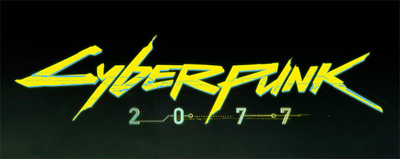
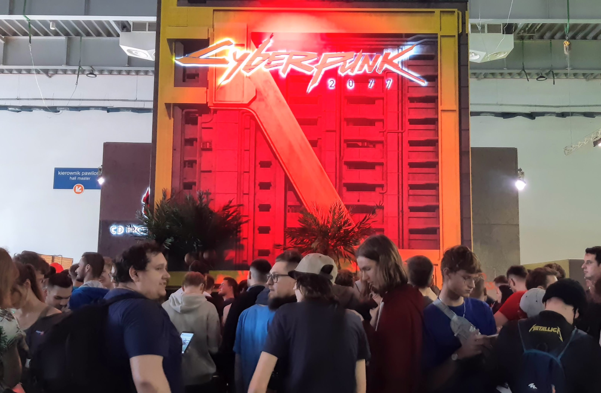

Cyberpunk Season 2
Contents


Dude if you haven't seen season 1, it's on Netflix and you need to! Like there is no show that is better than it! But the trailer came out this summer and I couldn't stop watching it.
Why I Picked This
Like cmon it got anime of the YEAR
About the Creators
I personally know the writers haven't failed to deliver on any of their previous works. Like their video game that released before the show called Cyberpunk 2077. It had great writing and great gameplay.
Quote
"Cyberpunk: Edgerunners is a 2022 anime series based on the 2020 video game Cyberpunk 2077, which is set in the dystopian Night City, a fictional city in the Cyberpunk universe. The series was produced by Studio Trigger and directed by Hiroyuki Imaishi, with a screenplay by Masahiko Otsuka and character designs by Yoh Yoshinari. The series follows a group of mercenaries known as "edgerunners" who take on dangerous jobs in order to survive in the harsh world of Night City." Netflix
Future Content
I'm gonna add more content mainly talking about the characters and their story through the story. I also want to talk about the animation and how it was made. I also want to talk about the music and how it was made. I also want to talk about the voice acting and how it was made. I also want to talk about the writing and how it was made. I also want to talk about the directing and how it was made. I also want to talk about the production and how it was made. I also want to talk about the marketing and how it was made. I also want to talk about the reception and how it was made. I also want to talk about the legacy and how it was made.
Image Credits
- "cyberpunk" by Studio Trigger, via Wikimedia Commons, CC.40.
- "edgerunners" by daseextra, via Flickr, CC.40.
Characters
| Character | Role | Personality |
|---|---|---|
| David Martinez | Edgerunner | Determined and ambitious |
| Lucy | Netrunner | Quiet and independent |
| Rebecca | Edgerunner | Energetic and fearless |
| Maine | Edgerunner Leader | Strong and protective |